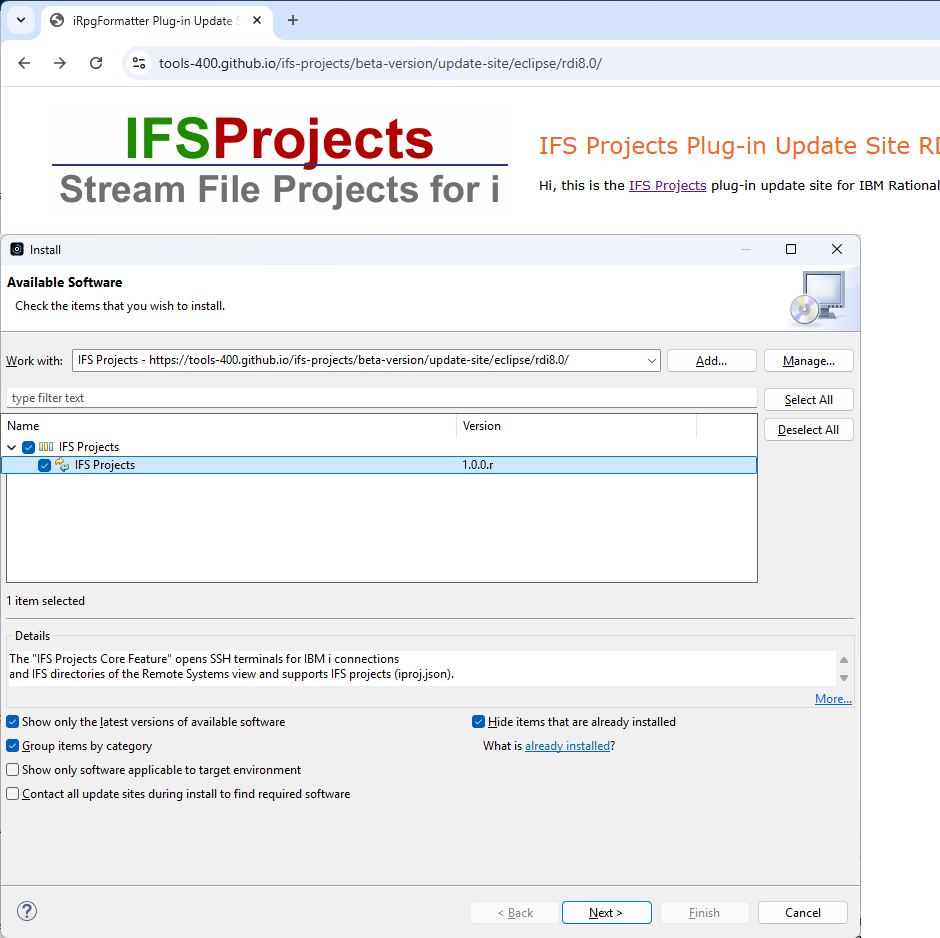

IFS Projects Plug-in Update Site RDi 9.6.0.13+Hi, this is the IFS Projects plug-in update site for IBM Rational Developer for i. |
From the main menu, select "Help > Install New Software..." to enter the "Install" dialog.
Drag-and-drop the URL of the update site into the "Work with:" field:

Then select the options you want to install, press the [Next] button and follow the instructions given on the following pages.
Go to the IFS Projects GitHub Files page and download the zip file for your environment.
Then follow these steps to create your local update site:
Go to the IFS Projects GitHub Files page and download the zip file for your environment.
Then follow these steps to create your local update site:
The following terms are trademarks of the IBM Corporation in the United States or other countries or both:
| Version: 1.0.0.b004 - Copyright: 2026, IFS Projects Project Team | Updated: 23.10.2026 - 11:16:23 |